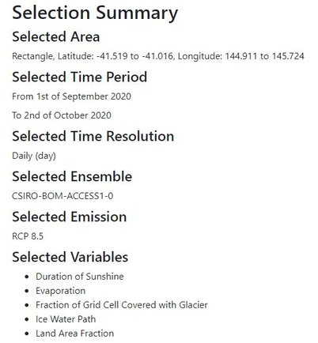

All selected parameters will be recorded and showed in this area, let you know what your selections are to help you understand what climate data will be provided. The function provides a chance to avoid human mistake before you download the data – commonly, the climate data is very large that means it will take you a lot of time. If you get the data which is not you wanted, the download time has been wasted.
